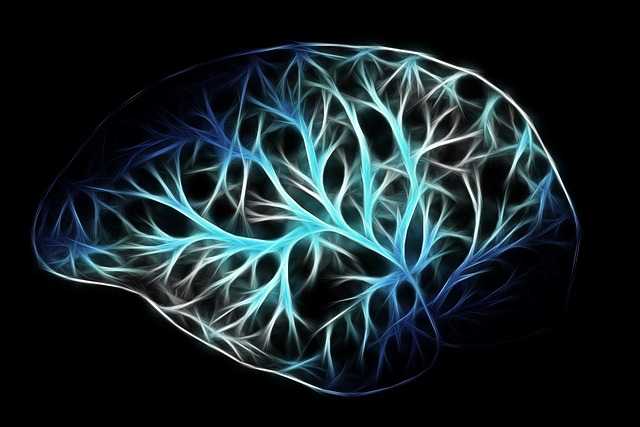

Torna alla home page
Qualcuno si chiedeva se il battito di ali adi una farfalla
potesse influenzare il climas migliaia di chilometri di
distanza. Conoscere la risposta non ci e' concesso ma il
risultato e' tutto meno che scontato!
Dovremmo avere un cervello tanto potente da poter
contenere tutte le informazioni riguardanti gli atomi,
particelle, elementi, parti che costituiscono il nostro
pianeta. Con un piccolo sforzo di intelleto si capisce
presto che tale cervello dovrebbe assumere dimensioni
almeno pari a quelle del sistema che si vuole studiare
(sempre di non ammetere l'esistenza si altri universi con una struttura della materia molto diversa
dalla nostra in cui fosse possibile una sorta di dua compattazione); dovrebbe, in qualche modo,
riprodurlo.
Diversamente, non sarebbe possibile ottenere tutte le informazaioni di cui si avrebbe bisogno.
Metiamo il caso, infatti, che tale cervello fosse piu' piccolo della terra. in questo modo potrebbe
essere contenuto nel pianeta. Ma se fosse in esso contenuto dovrebbe portare in se' le informazioni
di ogni propria parte e, piu', anche tutte quelle riguardanti il resto. La cosa appare impossibile dato
che le informazioni possono essere memorizzate su un supporto o riprodotte fedelmente, perche'
se ne conservi traccia. La riproduzione fedele del cervello stesso occuperebbe uno spazio pari al
proprio, e quel punto non restarebbe spazio per la disposizione di altri dati.
Di maggior capienza, invece ci sarebbe bisogno, per registrare tali informazioni su un supporto di
memorizzazione adeguato: scelto un punto di riferimento, per ogni piu' piccola parte del nostro
pianeta avremmo bisogno di un set di coordinate spaziali, di informazioni riguardanti la forma, la
composizione ecc... Operazione, oltre che fisicamente, non realizzabile neanche teoricamente,
stante la limitazione di spazio impastaci. Resta quindi chiaro che, volendo memorizzare le
informazioni riguardanti un singolo sistema, bisogna (come minimo), in termini di spazio, ricreare
tale sistema.

estendendo il discordo a piu' ampi ambiti
potremmo sostenere che chiunque
volesse, nella predizione di un
determinato evento, considerare tutte le
condizioni al contorno, anche estreme (il
battito d'ali), dovrebbe avere la
fotografia attuale dell'universo intero in
quel momento. Solo un cervello grande
quanto l'universo stesso potrebbe,
quindi, prevedere con assoluta certezza il
futuro, semplicemente proponendo i
fatti, nel caso in cui fosse una sua precisa
riproduzione.
|
Torna alla home page |